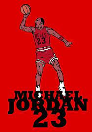

Michael Jordan é uma lenda da NBA. Considerado por muitos o maior jogador de basquete da história, o ex-ala-armador do Chicago Bulls marcou época na liga, onde conquistou seis títulos e foi eleito cinco vezes o MVP (Most Valuable Player) da temporada - além de deter dezenas de recordes individuais.
Em quinze temporadas como profissional, Michael Jordan marcou impressionantes 32,292 pontos, que renderam a marca de quinto maior pontuador da história da NBA, atrás apenas de Kobe Bryant, Karl Malone, Kareem Abdul-Jabbar e Lebron James, que alcançou a liderança em fevereiro deste ano.
Michael Jordan viria a se tornar um hit entre os torcedores já desde sua primeira temporada, quando registrou uma média de pouco mais de 28 pontos por partida e uma vaga no NBA All-Star Game - que elege os destaques da liga - e o título de estreante da temporada.